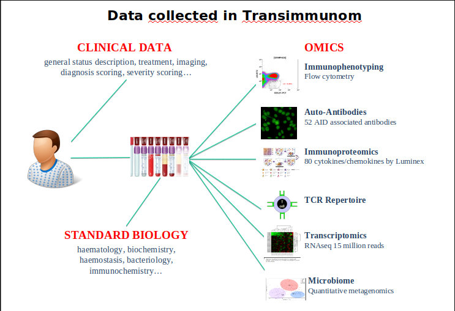
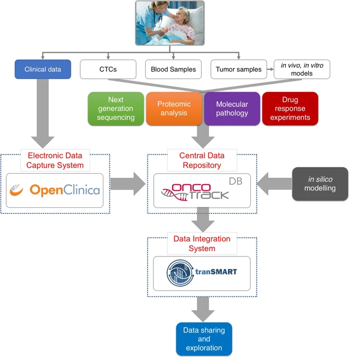

tranSMART for data analysis in Systems biology/immunology
tranSMART
how to leverage multiple data type ?
tranSMART
how to leverage multiple data type ? Gu et al, 2019 : Data and knowledge management in translational research: implementation of the eTRIKS platform for the IMI OncoTrack consortium
how to promote cooperation between professional with different background ?
- biologist/immunologist
- clinicians
- bioinformaticians
- Data managers
What is tranSMART ?
a knowledge management plateform for biomedical research :
- a database
- an ETL plateform
- a graphical interface
- a data analysis plateform
Case report
Data and knowledge management in translational research: implementation of the eTRIKS platform for the IMI OncoTrack consortium
Gu et al, 2019
Case report
developing an integrated knowledge management platform capable of supporting the complexity of the data generated by biomedical research programmes.
Gu et al, 2019
case report
Methods for systematic next generation oncology biomarker development:
- leverage multiple data type
- promote cooperation between differents institute and between professional with different background
case report
Two patient cohorts:
- prospectively : primary colon cancer surgery
- retrospectively : metastasis surgery
build a colon cancer tissue bank containing both primary and metastatic tumour samples, together with associated normal tissues and biofluids.
Imi OncoTrack types of data
3 types of low dimensional data :
- the observational clinical cohorts,
- the drug response data from the cell-line models
- the drug response data from the xenograft models
The high dimensional omics data:
- Variants among germline, primary and metastatic tumour material
- Confirmatory genomic analyses of xenograft and cell cultures
- Quantification of RNA transcripts from clinical and preclinical samples
- Quantification of small non-coding RNA (miRNA)
- Analysis of DNA Methylation
data analysis with transmart
Analysis tools for data exploration and hypothesis generation:
- Summary Statistics
- Advanced workflow
- SmartR
- Fractalis
SmartR
exploratory statistic and data visualisation plugin
dynamic and interactive visualisation


Fractalis
plateform independant tool for data explorationkey concept
- data format agnostic : microETL
- allow parrallelization on multiple node
- plug every analysis script in python or R
- relay analysis requests to frameworks such as Hail that can analyze large-scale genotype data
- good development practices
workflow developpment strategy
2 methods
- script pluged on fractalis without knowledge of fractalis
- script using celery interface to parrallelize traitment
miR-1269 promotes metastasis and forms a positive feedback loop with TGF-β.
Bu P. et all